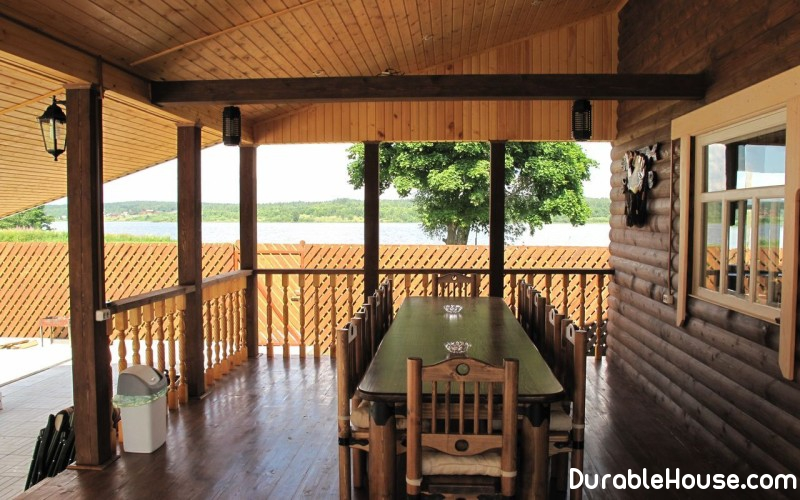

How to build a veranda
The terrace is a gallery adjoining the building and going level with its threshold, continuation of the house, a kind of balcony, only much larger. If it is summed up under roof and glazed, you get a veranda, the external appearance of which must be combined with architecture of the house.
If the house is small, then the area of the terrace should be no more than a few square meters. Meters. naturally, for the "palace" is appropriate indoor gallery with a balustrade. And because often the terrace serves as a kind of "bridge" in the garden, it must be in harmony with the landscape. In conditions our open-air terrace, combined with a roof-only house, is regarded as a seasonal room for cooking, feasting and relaxation: the stove replaces oven-brazier, furniture is applied lightly, so that it would be more convenient to transfer it to a place wintering.
Dimensions and location
As a rule, the area of the terrace (veranda) should not exceed? Part of the total area of the first floor. If the base of the house occupies 40 m ?, then the terrace area, respectively, should have a size of 10 m ?.
Planning the construction of a terrace or veranda is better at the design stage of the house. Then it can be erect on the main foundation of the main building, with only a few raise the level of the floor, so that it eventually was flush with the floor plane of the inner room. At the same time, several steps are usually taken from the garden to the terrace.
If you decide to attach a terrace to the finished house, the best option is a columnar one or pile foundation and terraced cover, mounted on logs. This option does not require additional heat and waterproofing of the junction of the site to the wall of the house. Remember that when designing and building a terrace requires a flat area with a small slope from the house for drainage of sedimentary water.
Forging in combination with terracotta tiles is designed for building of brick and stone, and the terracotta covering will look great without walls and roof. Glass roof and walls in the strength of their transparency will look neutral and next to the house of the wooden beam, and near the stone structure. When choosing a terrace tile, give preference to specialized materials and technologies to avoid unpleasant surprises in the form of wedging joints in frosty winters and, as a consequence, replacing the entire coating in the spring.
Decoration of the terrace
The more plants, the more attractive the summer playground. Living curtain is better placed on perimeter of the terrace located on the "warm" side of the house (greenery and roof of the site create shading, and part of the house remains without sunlight). Furniture on the terrace should be resistant to moisture and sunlight, durable and lightweight.
Building
First we make the foundation. Parallel to the house at a distance of 3 m drive 2 pegs and pull twine. For the future foundation we measure the distance between pegs and divide by the required number, but to get a distance of no more than 1-1.2 m. Digging pits 40? 40 cm and depth 50 cm. If a solid tide is made near the wall of the house, then we use it as a basis for the basement of the veranda. From the boards for the columnar foundation, we knock off the formwork 30-40 cm high, on the center of one of the sides, make a hole with a diameter of 20 mm and fix above each pit fill the concrete, into the side opening of the formwork we insert a wooden pin. After 5-7 days carefully disassemble the formwork, cut off the protruding part of the pin, from above to the protruding part base we spread liquid tar and paste the roofing material.
We proceed to assemble the framework of the veranda, focusing on the plan-scheme.
After you evenly lay and nail lags for the roof, without nailing, lay out with slate.
On the place where the pillar for the handrail passes, cut out the square hole to the size of the column. nail the slate. On that place of the protruding column, where it touches the slate, cut out from a roofing material a strip in width of 20 sm and wind round a column with an admission on a slate. Promote clearances with molten tar or sealant. On the level to the posts nail the floor lags balcony, on the top nail the floorboards. We nail the floor for the verandah and the railing. Required impregnate the wood with a preservative, then cover with varnish or paint.